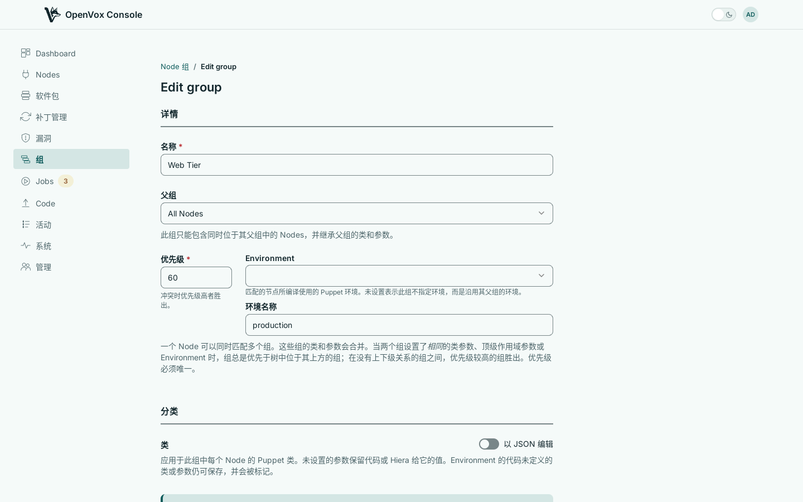

使用
为 Nodes 分类
借助一棵按 Facts 匹配或按名称固定的 Node 组树，决定每个 Node 获得哪些类、参数和 Environment。
openvoxserver 会询问控制台每个 Node 应该是什么样：包含哪些类、使用哪些参数，以及其代码来自哪个 Environment。控制台依据其 Node 组作答。只有在连接之后，分类才会到达 openvoxserver，两份安装指南都介绍了如何连接。
查看组需要 classifier:read；创建、更改和删除组需要 classifier:write。
组构成一棵树
每个组都有一个父组。最顶层是 All Nodes，这是一个内置组，每个 Node 都属于它。你不能删除、重命名或移动它，它也没有规则或固定的 Nodes，但你可以为它设置类、参数和 Environment，它们随后会应用于整个机群。
组只能包含同样位于其父组中的 Nodes。因此，无论其自身规则如何，Linux Servers 下的组永远不会纳入 Windows Node，而且组的 Nodes 总是其父组 Nodes 的子集。除非你选择其他父组，否则新组会直接位于 All Nodes 之下。
组不能被移到它自己或其下属的任何组之下；而仍有下属组的组不能被删除：请先移动或删除那些下属组。
已被授予给某个角色的组也不能被删除，因为那样会悄无声息地收回该角色所提供的访问权限。请先在角色页面上从该角色中移除这个组——参见用户、角色与令牌。
组如何决定它适用于哪些 Nodes
当 Node 位于组的父组中，并且满足以下任一条件时，该组就适用于该 Node：
- 该 Node 按名称固定到该组，或者
- 该 Node 的 Facts 满足组的匹配规则：满足其所有条件，或满足其中任意一个，取决于该组的设置。
既没有条件也没有固定 Nodes 的组不会应用到任何 Node。空规则被有意设计为不代表「所有人」，这样一个半成品的组就不可能接管整个机群。
固定会覆盖组自身的规则，但不会覆盖其父组。被固定到某个组、但其父组并不包含它的 Node 不属于该组；组的页面会列出这类固定，以免一个无效的固定悄无声息。
每个条件将一个 Fact 与一个值进行比较：
| 运算符 | 当该 Fact 满足以下条件时匹配 |
|---|---|
= |
等于该值 |
!= |
不等于该值 |
~ |
以正则表达式匹配该值 |
> < >= <= |
按相应方式比较，两边都是数字时按数值比较 |
Facts 以其路径命名，结构化 Facts 用点号分隔：os.family、os.release.major、networking.domain。
创建组
- 打开组并创建一个组。
- 为它命名，选择其父组，如果它需要设置 Environment，再选择其 Environment。Environment 是一个下拉列表。未设置（会注明该组将从父组继承什么）表示把选择权交给父组。openvoxserver 报告的 Environments 列在其下方。Other... 会打开一个文本字段，用于输入尚未列出的名称，例如你刚刚 push 的分支，或者在列表无法加载时使用。
- 添加类（每个类带上其所需的参数），以及任何顶层作用域参数。参见下文的选择类。
- 构建其匹配规则，每行一个条件：一个 Fact 路径、一个运算符和一个值。选择 Node 必须满足所有条件还是满足其中任意一个。编辑器会拒绝保存没有 Fact 路径的条件或无法编译的正则表达式，并指出哪一行有误。
- 按 certname 固定那些无论 Facts 如何都应属于该组的 Nodes。
- 为它设置优先级，然后保存。


组列表以树形显示，每个组位于其父组之下，并显示每个组此刻匹配的 Node 数量，因此匹配不到任何 Node 或匹配了所有 Nodes 的规则会立即显现。
以 JSON 编辑会以原始 JSON 显示规则，用于粘贴规则，或编写行编辑器不提供的结构。它的检查与行编辑器相同：以 JSON 或通过 API 保存的规则，即使 Fact 路径为空或正则表达式有误也会被接受，只是永远不会匹配。
选择类
控制台会从 openvoxserver 读取你已 deploy 的代码所定义的类，因此组的类是选出来的，而不是手动输入的。
- 在类下，在添加类中开始输入，选择该类并添加。
- 要设置它的某个参数，请在设置参数下选择该参数。出现的字段与参数类型相符：Boolean 或 Enum 为选项，Integer 或 Float 为数字，String 为文本。其备注会显示类型和代码中的默认值。其他任何类型都以 JSON 输入，因此文本需要加双引号：
"value"、["a", "b"]。 - 省略某个参数即可保留代码或 Hiera 为其提供的值。移除参数即可恢复为该值。
类来自该组的 Environment：它自己的，否则取最近一个设置了 Environment 的父组的，再否则为 production。页面会说明采用的是哪个，以及列表的读取时间。如果某个 Node 还匹配另一个设置了不同 Environment 的组，它会针对那个 Environment 编译，而这是该组无从得知的。
该列表会被复用五分钟，并在代码 deploy 后重新读取。刷新类会立即读取它，需要 classifier:write。
openvoxserver 会为每个 Environment 维护自己的缓存。如果它被设置为无限期保留 Environments（容器镜像就是如此），新代码添加的类在该缓存被刷新之前不会出现——这与 catalog 看到新代码所需的刷新相同。参见使用容器安装。
以 JSON 编辑会以原始 JSON 显示类，便于粘贴。
与代码不符的类
组可能指定了 Environment 中未定义的类、设置了类中未声明的参数，或者给出了与参数类型不符的值。当代码中的类被重命名或删除，或者组在代码 deploy 之前就已保存时，就会出现这种情况。
组页面会逐一标记它们，组列表会在该组上显示类不匹配。这些仅作为提示：
- 组会按原样保存。不会删除或更改任何内容。
- Nodes 仍然会带着该类被分类。如果某个 Node 的 catalog 需要一个不存在的类，它就会编译失败并报
Could not find class，直到代码或组被修改为止。 - 只有控制台能够检查的类型才会被检查。其他任何类型的值都永远不会被标记。
当 Environment 中的某个 manifest 解析失败时，不会把任何类标记为缺失，因为该类可能就在那个 manifest 中。页面会改为列出这些 manifests 及其错误。
当列表不可用时
页面会说明原因，此时类和参数需要按名称输入。不会标记任何内容，保存和分类都照常工作。原因有：
- 控制台没有连接到 openvoxserver。请设置
CONSOLE_PUPPET_SERVER_URL。 - openvoxserver 不允许控制台读取类。请添加安装指南中的规则：容器或软件包。
- 无法访问 openvoxserver。如果之前读取过该列表，就会提供之前的列表，并标记为可能已过时。
当组相互重叠时
匹配多个组的 Node 会获得所有这些组中的全部内容：每个类、每个参数。由于组中的 Node 也位于其上层的每个组中，一个组会继承那些组设置而它自己未设置的任何内容。
当两个组对同一事项（同一个类参数、同一个顶层作用域参数或 Environment）设置不同时，由两条规则按以下顺序决定：
- 组总是优先于其上层的组。子组的值优先于父组、祖父组等的值，无论它们的优先级如何。
- 在互不为上下级的组之间，优先级高者胜出。
组的排名也至少与其父组一样高。假设一个优先级为 10 的父组、它的优先级为 1 的子组，以及一个无关的优先级为 5 的组，都匹配同一个 Node。按照第一条规则，子组胜过其父组；它也胜过那个无关的组，因为它的排名按 10 计算：对某个组的细化，会胜过该组所胜过的一切。
当子组覆盖更高的优先级时
如果某个组的设置与其上层一个优先级更高的组不同，仍然会采用子组的值，但单看优先级本应得出相反的结论。控制台会告诉你：打开或保存该组时，组页面会指出该父组以及相关的值；组列表会把该组标记为覆盖优先级；这一变更也会记录在活动页面上。这是一个警告，而不是错误。不会拒绝任何操作，Nodes 也会照常分类。要消除它，请为子组设置更高的优先级，或者从两个组之一中删除该值。
在 All Nodes 上设置的值永远不会引发此警告：每个组都应当覆盖这些值。
设置配置数据
配置数据是你的代码通过 lookup() 读取的数据：ntp::servers、profile::dns::resolvers 或任何其他 Hiera 键的值。在 Node 组上设置它，就能为组中每个 Node 更改该值，而无需提交代码或进行代码 deploy。
- 打开该组，在类下打开配置数据（JSON）。
- 输入一个由键和值组成的 JSON 对象，例如
{"ntp::servers": ["0.pool.ntp.org"], "dns::timeout": 5}。值可以是任何 JSON：字符串、数字、布尔值、列表、对象或null。 - 保存该组。Nodes 会在下一次 Puppet 运行时采用它。
键最长 255 个字符，可包含字母、数字以及 _ : . -。一个组最多可容纳 1000 个键，每个值最大 64 KiB。键 lookup_options 会被拒绝：Hiera 用它来设置合并行为，而配置数据不提供这一功能。
Node 获得哪个值
数据会按照合并类参数的相同两条规则（参见当组相互重叠时），从 Node 所在的每个组中合并而来：组优先于其上层的组，而在无关的组之间，优先级高者胜出。胜出组设置的键会整体替换其他组中的同名键：如果两个组都把 app::opts 设置为一个对象，这两个对象不会逐键合并。
控制台数据优先于 control 仓库
当某个键既在此处设置、又在你的 control 仓库的 Hiera 数据中设置时，采用控制台的值。控制台未设置的键会像以前一样在 control 仓库中查找。因此，需要按组覆盖的值适合放在配置数据中，而其他一切仍应放在 control 仓库中。
不适用于机密
配置数据以纯文本形式存储，并向每个能查看 Node 组的人（classifier:read）显示。请勿在其中存放密码或密钥。活动页面和审计日志会记录哪些键发生了变化，但绝不记录其值。
如果某个 Node 的运行失败
openvoxserver 每次编译 catalog 时都会向控制台请求该 Node 的数据。如果控制台无法应答，编译就会失败，并报出指明控制台的错误，而不会用缺失的值构建 catalog。安装指南介绍了如何设置服务器以发出该请求。
检查一个 Node 会得到什么
组的页面会列出它此刻匹配的 Nodes。一个 Node 最终获得的是所有匹配组合并后的结果，而唯一能显示完整答案的地方就是 enc-bridge 本身：按照安装指南所示，在 openvoxserver 主机上向它查询，它会准确打印出 openvoxserver 被告知的内容。Node 的配置数据是分开的：使用同一个令牌请求 GET /api/v1/enc/<certname>/data 即可获得。
分类在 Node 的下一次 Puppet 运行时生效。要立即应用，请从该组的页面启动一次运行，它会在该组匹配的每个 Node 上运行 Puppet；参见运行 Jobs。
对组的每次更改都会记录在活动页面上，并注明是谁做的。
从不支持组树的版本升级
升级不会改变任何 Node 的分类。每个现有组都会成为 All Nodes 的直接子组，保留其规则、固定的 Nodes 和优先级，并像以前一样按其所有条件进行匹配。
如果你之前已经有一个名为 "All Nodes" 的组，它会被重命名为 All Nodes (previous)，并带着它自己的规则完全照旧运行。它不会被转换为内置组，因为那样会把它的类应用到其规则原本并不匹配的 Nodes 上。检查过它之后，你可以把它的类移到内置的 All Nodes 上，然后删除它。
如果你运行多个控制台实例，请在把某个组放到另一个组之下之前，先完成所有实例的升级。仍在旧版本上的实例会忽略父组，只按优先级进行分类。参见运行更多实例。